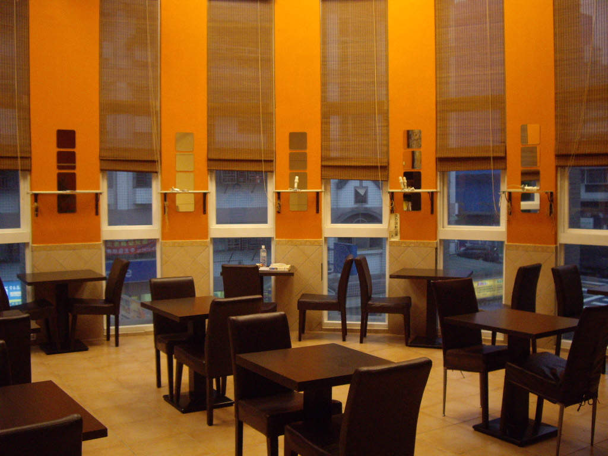
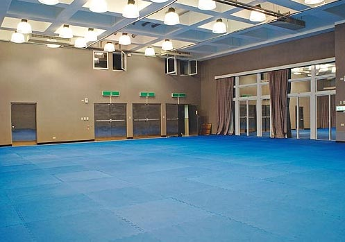

一樓服務台位於頂好超市正後方，在這裡，可索取各種藝文資訊，現場隨時有服務人員，針對館舍導覽、洽詢、活動報名、課程繳費、場地租借、停車場租借等，提供全方位的親切服務。
本館地下一樓停車場有提供月租和臨時停車的服務；其中機械車位，可提供民眾長期租用，而平面車位，可供參與活動或課程的民眾臨時停車，收費方式以每小時30元計。跟本館承租場地之活動主辦單位，可視活動需求，另洽臨停依次計費。
可做為藝文茶會、記者會、發表會、展覽、小型演出和講座等。花卉圖案的弧形屏風營造出具有層次的空間感，整排的落地窗外可看到寬闊的露天咖啡座。非常適合心靈健康課程。 開放文山區非營利組織和個人登記使用，進行非營利之公益或教學等活動項目，但不得有任何營利行為；須事先申請經社區委員會通過後，始可使用。
面積：66坪
容納：80人

開放給一般社區民眾作為閱覽、藝文之休憩空間。若要利用該空間舉辦公共靜態展覽活動，請事先提出申請。
面積：30坪
容納：約30人

這是一個可容納50-80人的空中露台，並有燈光、舞台，白天眺望藍天、白雲和青山，晚上則有浪漫觀景燈光陪伴，是舉辦party和社交活動的最佳場所。
面積：60坪
容納：約50人
落地窗的設計，陽光充足的午後，格外美麗。而教室型的設計 － 木質地板、活動式課桌椅、黑板，加上攜帶式投影設備，是個適合舉辦各項課程、講座、研討會及教育訓練的空間。
面積：16坪
容納：約20人

挑高、寬敞、明亮的舞蹈教室中，包括鏡子和木質地板，安靜的空間，可以舉辦瑜珈或舞蹈課程，亦適合各種表演藝術排練。
面積：36坪
容納：約30人

台北市最豪華、最寬敞的體能訓練場地，四周的落地窗帶來陽光普照，不論要跑、要跳、要翻跟斗、要耍長槍、長棍都很適合。約80坪、挑高6米，可以容納70人進行體能訓練或比賽。四周的落地窗帶來陽光普照，再加上遠處的青山讓人心境開闊，就像與世無爭、潛心修鍊的俠士。
面積：約86坪
容納：約80人

作為音樂術科專用指導教室，具有寬敞的教學空間，完善的隔音設備，讓學習者得以在無干擾的環境中專注學習，兼具排練和演出的功能。
面積：約38坪
容納：約30人